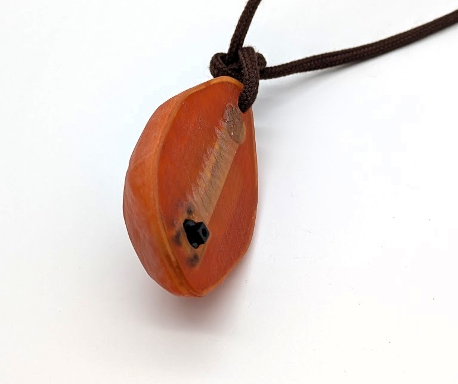
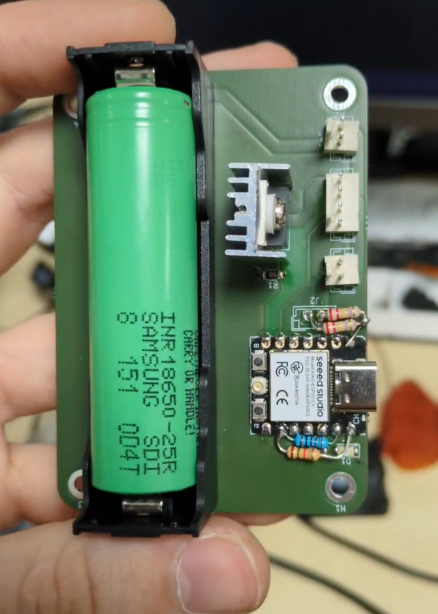

Collier lumineux pour la scène
Accessoire lumineux conçu sur mesure pour la scène, mêlant électronique embarquée, illusion et exigence d’encombrement.
Présentation
Dans le cadre de mon auto-entreprise, et à la demande des French Twins, duo de magiciens et consultants en effets d’illusion, j’ai conçu un collier lumineux interactif pour la scénographie d’une comédie musicale. Une pierre inerte en apparence, renfermant des LED haute puissance controlées par un boitier accroché à la ceinture.
Architecture technique
Le système repose sur une architecture compacte autour d’un XIAO ESP32-C3, un microcontrôleur miniature mais puissant, intégrant des sorties PWM et un module de charge de batterie integré.
L’ensemble est organisé autour de trois éléments :
- une pierre imprimée en résine translucide abritant la matrice LED et un bouton dissimulé à l’arrière,
- un faux collier intégrant les fils d’alimentation de manière invisible,
- une boîte de contrôle ceinture, contenant l’électronique et la batterie,


Conception d’un PCB sur mesure
Pour répondre aux contraintes d’usage scénique (fiabilité, discrétion, encombrement), j’ai conçu un circuit imprimé, intégrant :
- Le XIAO ESP32-C3,
- Une sortie PWM vers les LEDs haute puissance,
- Un connecteur pour bouton déclenchant la séquence lumineuse après appui prolongé,
- Des LEDs témoins de charge et d’allumage,
- Une batterie,
Premiers tests :


Contrôle de la séquence : firmware embarqué
Le firmware est écrit en Arduino C++, optimisé pour garantir une séquence fluide et une activation fiable dans un environnement scénique.
Pour le contrôle de l’animation, j’ai imaginé une fonction de fondu progressif, qui interpole automatiquement entre plusieurs valeurs définis dans un tableau de séquence facilement modifiable.
// Exemple de séquence : chaque étape représente une variation d’intensité dans le temps
const AnimationStep sequence[] = {
{20, 2.0}, // Monter à 20% sur 2 secondes
{0, 2.0}, // Redescendre à 0% sur 2 secondes
{50, 2.0}, // Monter à 50% sur 2 secondes
{0, 2.0}, // Revenir à 0%
{100, 3.0}, // Monter à 100% sur 3 secondes
{100, 3.0}, // Rester à 100% pendant 3 secondes
{20, 2.0}, // Descendre à 20%
{100, 2.0}, // Rebond à 100%
{0, 2.0} // Retour au noir
};
La séquence peut donc être modifiée par l’utilisateur indépendamment du firmware principal, ce qui simplifie les ajustements sans toucher au code système.
Un objet de scène sur mesure
Le collier devait non seulement s’illuminer selon une séquence précise, mais aussi pouvoir léviter à l’aide d’un fil quasiment invisible, fixé grâce à un aimant intégré dans la pierre.
Pour aider mes clients à comprendre le fonctionnement de mon dispositif, j’ai rédigé un guide d’utilisation en anglais.
Outils logiciels
- KiCad
- Onshape
- OrcaSlicer
- VSCode / Arduino
Technologies
- Impression 3D FDM
- Impression 3D Résine
- Programmation embarquée (Arduino)